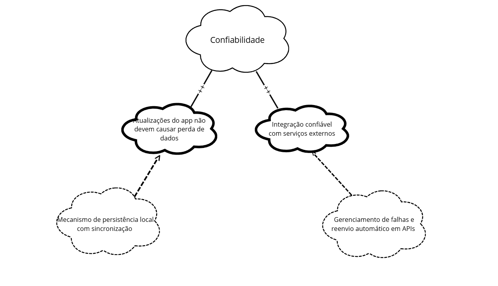
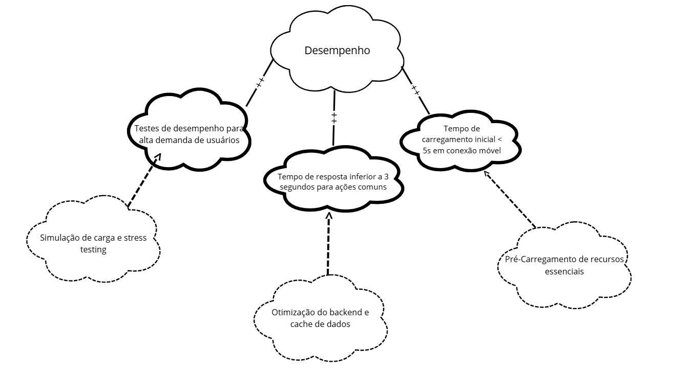
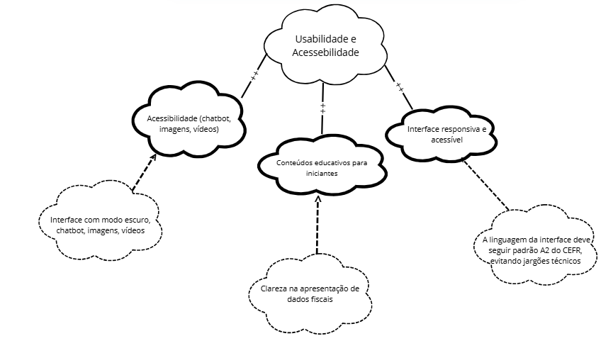
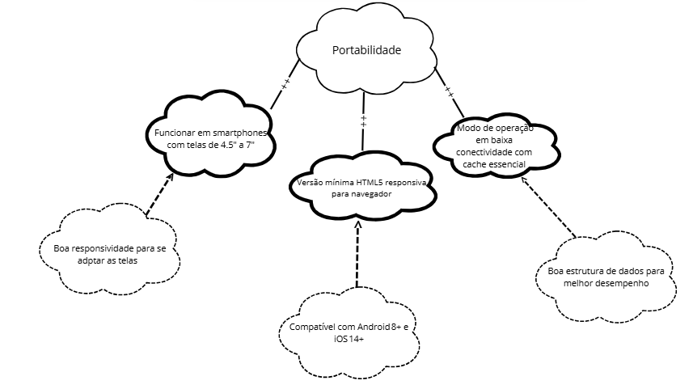

NFR Framework
Introdução
De acordo com a abordagem apresentada por Reinaldo Antônio da Silva (2019), o NFR Framework é um modelo utilizado na modelagem de Requisitos Não-Funcionais (RNFs), baseado em softgoals. Esses objetivos não possuem uma definição clara ou critérios de sucesso bem estabelecidos, o que os torna ideais para representar qualidades subjetivas dos sistemas.
Os softgoals ajudam desenvolvedores a tomar decisões durante o projeto, considerando aspectos como qualidade, segurança e desempenho. Além disso, podem influenciar uns aos outros, criando uma rede de impactos que afetam o sistema como um todo.
Tabela de contribuição
| Nome | Contribuição |
|---|---|
| Thales Germano | Criação do documento, ajustes Adição do cartão 03 e 04 Revisor. |
| Jose Eduardo | Adição das imagens de referência e tópicos decomposição e contribuição, criação dos tópicos confiabilidade, desempenho, segurança, usabilidade e acessibilidade, adição do cartão 01 e 02, validação do cartão 01 e 02 e Adição dos SIG com imagens (figuras 02, 03 e 04). Revisor. |
| Diassis | Adição do cartão 03 e 04 Validação do cartão 03 e 04 com usuário Revisor |
| João Pedro | Adição do cartão 09 e 10 |
| Julia Massuda | Adição do cartão 07 e 08 |
| Marco Marques | Adição do cartão 11 e 12 Revisor |
Fonte: Jose Eduardo, 2025.
Tipos de Softgoals
Os softgoals podem ser classificados em três grupos principais:
- Softgoals NFR: Representam diretamente os Requisitos Não-Funcionais e podem ser organizados de forma hierárquica.
- Softgoals de Operacionalização: Apontam para alternativas de implementação dos softgoals NFR, por meio de funções, estruturas ou restrições.
- Softgoals de Afirmação: Representam justificativas baseadas em conhecimento de domínio ou prioridades, servindo como base para apoiar ou refutar decisões de projeto e seleção de alternativas.
Figura 1 - Tipos de Softgoal

Fonte: Silva, 2019.
O atendimento aos softgoals é avaliado qualitativamente por meio de rótulos como satisfeito, parcialmente satisfeito ou não satisfeito, com base nas contribuições positivas ou negativas entre os nós no Softgoal Interdependency Graph (SIG).
Nota: O Softgoal Interdependency Graph (SIG) é um grafo que mostra como diferentes objetivos não-funcionais estão inter-relacionados, ajudando a visualizar conflitos e sinergias entre eles.
Interdependências entre Softgoals
As interdependências representam as associações existentes entre os softgoals no NFR Framework. Elas se dividem em dois grandes grupos: decomposições e contribuições.
Decomposições
As decomposições ocorrem em diferentes níveis de abstração, incluindo softgoals de NFR (requisitos não funcionais), de operacionalização e de afirmação. De acordo com Silva (2019), as três primeiras categorias envolvem a subdivisão de um softgoal em metas mais específicas, facilitando seu entendimento e análise. Há ainda uma decomposição especial voltada à priorização.
Os principais tipos de decomposição são:
-
Decomposição NFR: utilizada para quebrar metas amplas e complexas em partes menores e mais manejáveis. Essa divisão ajuda a reduzir ambiguidades e a facilitar a definição de prioridades.
-
Decomposição de Operacionalização: visa transformar uma solução genérica em soluções específicas, mais diretamente implementáveis no sistema.
-
Decomposição de Afirmação: empregada para justificar ou refutar determinadas escolhas de projeto com base em argumentos técnicos ou estratégicos.
-
Decomposição de Priorização: trata-se de uma decomposição especial em que um softgoal é refinado em outro do mesmo tipo e tópico, mas com a adição de um critério de prioridade. Essa abordagem permite destacar a relevância relativa de diferentes metas.
Essas decomposições são representadas graficamente nos modelos do NFR Framework por meio de conexões entre nós (softgoals), utilizando-se setas e operadores lógicos (como AND/OR) para indicar a natureza da decomposição.
Figura 2 - Tipos de decomposição
Fonte: Silva, 2019.
Contribuições
No NFR Framework, os softgoals são progressivamente refinados em metas mais específicas. Como resultado, um softgoal derivado pode contribuir de forma total ou parcial — e tanto positiva quanto negativamente — para o softgoal original. A seguir, listam-se os tipos de contribuição:
- AND: se os softgoals derivados forem satisfeitos, o softgoal primordial também será.
- OR: se algum dos softgoals derivados forem satisfeitos, o softgoal primordial também será.
- MAKE(++): um softgoal originado contribui de forma plenamente positiva, logo o softgoal original também será satisfeito.
- BREAK(--): um softgoal originado contribui de forma plenamente negativa, logo o softgoal original será negado.
- HELP(+): um softgoal originado realiza uma contribuição restritamente positiva, o que reflete da mesma forma e na mesma intensidade no softgoal primordial.
- HURT(-): um softgoal originado realiza uma contribuição restritamente negativa, o que reflete da mesma forma e na mesma intensidade no softgoal primordial.
- UNKNOWN(?): contribuição incógnita.
- EQUALS: relação direta entre as satisfações do softgoal derivado e a do primordial.
- SOME: a forma de contribuição é conhecida, no entanto, a intensidade dessa contribuição é desconhecida.
Propagação de impactos
A propagação de impactos no NFR Framework diz respeito à análise das relações de dependência entre os requisitos não funcionais, avaliando como alterações em um softgoal podem influenciar outros com os quais mantém algum tipo de vínculo. Essa avaliação é essencial para identificar efeitos colaterais, conflitos e contribuições acumuladas que podem afetar diretamente a qualidade geral do sistema.
Para que essa análise seja eficaz, é necessário compreender com clareza: - As interações entre os softgoals; - As prioridades atribuídas a cada meta de qualidade; - Os possíveis trade-offs entre requisitos concorrentes.
Ao considerar a propagação de impactos, os engenheiros de requisitos conseguem tomar decisões mais conscientes, identificar pontos críticos do sistema e gerenciar mudanças de forma mais segura e estruturada.
Tipos de Impacto entre Softgoals
A seguir, são apresentados os tipos mais comuns de impacto entre softgoals, junto com suas respectivas notações simbólicas, conforme utilizados no NFR Framework:
-
✓ (Satisfeito) Indica que um requisito não funcional contribui de forma clara e significativa para a satisfação de outro softgoal. Representa uma relação de impacto fortemente positiva.
-
𝒲+ (Fracamente satisfeito) Indica uma contribuição positiva, porém moderada. O requisito relacionado apoia o softgoal-alvo, mas sua influência é limitada ou indireta.
-
✗ (Negado) Indica que o requisito em questão tem um impacto negativo direto, impedindo ou contradizendo a realização de outro softgoal.
-
𝒲− (Fracamente negado)
Representa uma influência negativa mais fraca, que pode dificultar, mas não necessariamente inviabilizar, o alcance do softgoal afetado. -
🗲 (Conflitante) Indica a existência de um conflito entre softgoals. A realização de um pode beneficiar alguns aspectos e prejudicar outros, exigindo negociação e priorização.
-
? (Indeterminado) Utilizado quando a relação entre dois requisitos não funcionais é desconhecida ou incerta. Pode indicar falta de informação ou necessidade de análise posterior.
Metodologia
A metodologia adotada nesta aplicação do NFR Framework seguiu uma abordagem prática e colaborativa, baseada nos princípios de Reinaldo Antônio da Silva (2019), com foco na coleta, organização e análise de requisitos não funcionais relacionados ao sistema da Receita Federal.
Cada integrante do grupo foi responsável por duas funcionalidades específicas do sistema, sendo também responsável por levantar e modelar os requisitos não funcionais associados à sua área. Os RNFs foram obtidos por meio de técnicas de elicitação, como introspecção e análise de documentos.
A Tabela 1 apresenta a distribuição das funcionalidades por integrante:
Tabela 1 - Distribuição de funcionalidades por integrante
| Funcionalidade | Integrante Responsável |
|---|---|
| [Funcionalidade A] | [Nome 1] |
| [Funcionalidade B] | [Nome 2] |
| ... | ... |
| [Funcionalidade N] | [Nome N] |
Tabela 1 - Distribuição de funcionalidades por integrante
Com base nessa divisão, os requisitos não funcionais foram mapeados, classificados em softgoals e organizados em modelos gráficos segundo os conceitos do NFR Framework.
Cartões de Especificação
Para facilitar o registro e o rastreamento das decisões de projeto, foram utilizados Cartões de Especificação de Requisitos Não-Funcionais, apresentados nas Tabelas 2 a N. Cada cartão contém os seguintes campos:
Tabela 2 - Padrão dos cartões
| Campo | Descrição |
|---|---|
| Nº do Requisito | Identificador único do requisito (ex: RNF01, RNF02...) |
| Descrição | Texto explicativo sobre o que o requisito exige ou pretende garantir |
| Classificação | FURPS+ |
| Origem | Fonte do requisito (ex: usuário, legislação, análise técnica) |
| Justificativa | Razão pela qual o requisito foi definido (ex: atender à LGPD) |
| Critério de aceitação | Condições que devem ser atendidas para considerar o requisito cumprido |
| Dependência | Outros requisitos dos quais este depende ou se relaciona |
| Prioridade | Nível de importância (Alta, Média ou Baixa) |
| Conflitos | Possíveis requisitos com os quais este pode gerar conflito |
| Histórias | Histórias de usuário relacionadas ao requisito, se aplicável |
Cartão de Especificação – RNF01
Tabela 3 - cartão 01 - RNF01
| Campo | Descrição |
|---|---|
| Nº do Requisito | RNF01 |
| Descrição | Melhorias no chatbot, suporte a imagens descritivas e vídeos com legenda para garantir acessibilidade a usuários com deficiência visual ou auditiva. |
| Classificação | Acessibilidade |
| Origem | ADC13 |
| Justificativa | Assegurar inclusão digital e garantir que o aplicativo seja utilizável por pessoas com deficiência, atendendo a critérios de acessibilidade universal. |
| Critério de aceitação | O chatbot deve oferecer respostas por voz, suporte a leitores de tela e apresentar conteúdos multimídia com descrição textual ou legendas automáticas. |
| Dependência | RNF5 (Interface responsiva e acessível), RNF17 (Suporte a leitores de tela) |
| Prioridade | |
| Conflitos | Pode impactar negativamente no desempenho do app em dispositivos mais simples (potencial conflito com RNF10 e RNF16). |
| Histórias |
Fonte: José Eduardo, 2025.
Cartão de Especificação – RNF02
Tabela 4 - cartão 02 - RNF02
| Campo | Descrição |
|---|---|
| Nº do Requisito | RNF2 |
| Descrição | O sistema deve fornecer conteúdos educativos adequados para iniciantes no tema do aplicativo. |
| Classificação | Usabilidade (Apoio à Aprendizagem) |
| Origem | ADC14 |
| Justificativa | Facilitar a curva de aprendizado para novos usuários e aumentar o engajamento inicial. |
| Critério de aceitação | Conteúdo acessível diretamente no app; linguagem simples; tutoriais básicos em texto ou vídeo. |
| Dependência | Pode depender da estrutura de interface (RNF5) e acessibilidade de mídia (RNF1). |
| Prioridade | |
| Conflitos | Pode gerar conflito com desempenho (RNF16), caso o conteúdo aumente o tempo de carregamento. |
| Histórias |
Fonte: José Eduardo, 2025.
Cartão de Especificação – RNF03
Tabela 5 - cartão 04 - RNF03
| Campo | Descrição |
|---|---|
| Nº do Requisito | RNF 03 |
| Descrição | Permitir acesso offline a serviços essenciais do app, como históricos de contribuições e guias DARF já geradas. |
| Classificação | Usabilidade |
| Origem | Uso do App em locais com dificuldade de acesso à internet estável e áreas rurais |
| Justificativa | Garantir que o usuário tenha acesso a informações fiscais básicas mesmo sem conexão, aumentando a autonomia em regiões remotas |
| Critério de aceitação | O sistema deve funcionar corretamente em modo offline, exibindo dados previamente sincronizados. Deve indicar que está offline. |
| Dependência | Sincronização prévia dos dados com o servidor |
| Prioridade | A definir |
| Conflitos | Pode haver conflito com requisitos de segurança, como autenticação online obrigatória |
| Histórias | US-07 |
Fonte: Thales Germano, 2025.
Cartão de Especificação – RNF04
Tabela 6 - cartão 04 - RNF04
| Campo | Descrição |
|---|---|
| Nº do Requisito | RNF 04 |
| Descrição | O sistema deve oferecer comparativo automático entre declarações de IR de anos diferentes, destacando alterações relevantes. |
| Classificação | Funcionalidade / Usabilidade |
| Origem | Necessidade identificada em análise técnica |
| Justificativa | Facilitar a verificação de mudanças entre declarações, reduzindo erros e aumentando a transparência no preenchimento |
| Critério de aceitação | O sistema deve listar lado a lado os valores por categoria e destacar visualmente diferenças entre os anos comparados |
| Dependência | Dados das declarações anteriores devem estar disponíveis no sistema |
| Prioridade | A definir |
| Conflitos | Pode afetar performance em dispositivos com baixo processamento ou com dados incompletos |
| Histórias | US-08 |
Fonte: Thales Germano, 2025.
Cartão de Especificação – RNF05
Tabela 14 - cartão 05 - RNF05
| Campo | Descrição |
|---|---|
| Nº do Requisito | RNF05 |
| Descrição | A interface do aplicativo deve ser responsiva e acessível, adaptando-se a diferentes tamanhos de tela e compatível com tecnologias assistivas. |
| Classificação | Usabilidade (FURPS+) |
| Origem | ADC18 – Análise de Documentos |
| Justificativa | Garantir que o aplicativo funcione de forma eficiente e compreensível em diversos dispositivos, promovendo a inclusão digital. |
| Critério de aceitação | - Layout adaptável para diferentes tamanhos de tela. - Compatibilidade com leitores de tela como TalkBack e VoiceOver. - Navegação por teclado e suporte a contraste de cores acessível. - Cumprimento das diretrizes WCAG 2.1. |
| Dependência | RNF11 (Compatibilidade com telas 4.5" a 7"), RNF17 (Suporte a leitores de tela) |
| Prioridade | Alta |
| Conflitos | Ajustes de layout podem impactar o tempo de desenvolvimento ou performance inicial |
| Histórias | US-06, US-30 |
Fonte: Diassis, 2025.
Cartão de Especificação – RNF06
Tabela 15 - cartão 06 - RNF06
| Campo | Descrição |
|---|---|
| Nº do Requisito | RNF06 |
| Descrição | O aplicativo deve oferecer suporte ao modo escuro para reduzir o cansaço visual e economizar bateria em dispositivos compatíveis. |
| Classificação | Usabilidade / Portabilidade |
| Origem | ADC23 – Análise de Documentos, INT17 – Introspecção |
| Justificativa | Melhorar a experiência do usuário em ambientes com pouca luz e atender preferências individuais e limitações visuais. |
| Critério de aceitação | - O sistema deve permitir alternância entre modo claro e escuro. - O modo escuro deve aplicar-se à interface completa sem comprometer a legibilidade. - O usuário deve poder ativar/desativar pelo app ou seguir o tema do sistema operacional. - Testes de contraste e legibilidade devem ser realizados. |
| Dependência | RNF05 (Interface responsiva), RNF12 (Padrão de linguagem acessível) |
| Prioridade | Média |
| Conflitos | Pode exigir ajustes adicionais em componentes visuais e ícones |
| Histórias | US-27, US-29 |
Fonte: Diassis, 2025.
Cartão de Especificação – RNF07
Tabela 7 - cartão 07 - RNF07
| Campo | Descrição |
|---|---|
| Nº do Requisito | RNF 07 |
| Descrição | Testes de segurança para garantir a integridade dos dados e autenticação segura |
| Classificação | Segurança |
| Origem | Análise técnica e requisitos de compliance |
| Justificativa | Garantir a proteção dos dados dos usuários e conformidade com padrões de segurança, incluindo LGPD e boas práticas de desenvolvimento |
| Critério de aceitação | - Implementação de testes automatizados de segurança - Validação de autenticação e autorização - Verificação de criptografia de dados sensíveis - Testes de penetração realizados com sucesso - Conformidade com padrões OWASP |
| Dependência | RNF relacionados à arquitetura do sistema e gerenciamento de dados |
| Prioridade | Alta |
| Conflitos | Possível impacto na performance devido aos controles de segurança |
| Histórias |
Fonte: Júlia Massuda, 2025.
Cartão de Especificação – RNF08
Tabela 8 - cartão 08 - RNF08
| Campo | Descrição |
|---|---|
| Nº do Requisito | RNF 08 |
| Descrição | Compatível com Android 8+ e iOS 14+ |
| Classificação | Portabilidade |
| Origem | Análise de mercado e requisitos técnicos |
| Justificativa | Garantir ampla compatibilidade com dispositivos móveis em uso no mercado, abrangendo aproximadamente 85% dos usuários ativos |
| Critério de aceitação | - Aplicação executando corretamente em Android 8.0 (API 26) ou superior - Aplicação executando corretamente em iOS 14.0 ou superior - Testes realizados em diferentes modelos de dispositivos - Interface responsiva em diferentes tamanhos de tela |
| Dependência | Requisitos funcionais do aplicativo móvel |
| Prioridade | Alta |
| Conflitos | Limitações de recursos em versões mais antigas podem restringir funcionalidades avançadas |
| Histórias |
Fonte: Júlia Massuda, 2025.
Cartão de Especificação – RNF09
Tabela 11 - cartão 09 - RNF09
| Campo | Descrição |
|---|---|
| Nº do Requisito | RNF 09 |
| Descrição | Testes de usabilidade semestrais com público 60+ |
| Classificação | Usabilidade |
| Origem | Análise demográfica e requisitos de acessibilidade |
| Justificativa | Garantir que o aplicativo seja acessível e intuitivo para usuários idosos, considerando que representam uma parcela significativa dos contribuintes |
| Critério de aceitação | - Realização de testes de usabilidade com grupos de usuários acima de 60 anos a cada 6 meses - Identificação e correção de barreiras de usabilidade específicas para este público - Taxa de conclusão de tarefas superior a 80% nos testes - Tempo médio de conclusão de tarefas dentro dos padrões aceitáveis - Feedback positivo de pelo menos 70% dos participantes |
| Dependência | Interface do usuário implementada e funcionalidades principais disponíveis |
| Prioridade | Média |
| Conflitos | Possível conflito com design moderno que pode não ser familiar ao público idoso |
| Histórias |
Fonte: João Pedro, 2025.
Cartão de Especificação – RNF 10
Tabela 12 - cartão 10 - RNF10
| Campo | Descrição |
|---|---|
| Nº do Requisito | RNF 10 |
| Descrição | O aplicativo deve ter tempo de resposta inferior a 3 segundos para ações comuns |
| Classificação | Performance |
| Origem | Requisitos de experiência do usuário e padrões de mercado |
| Justificativa | Garantir uma experiência fluida e satisfatória para o usuário, evitando abandono devido à lentidão do sistema |
| Critério de aceitação | - Tempo de resposta máximo de 3 segundos para operações comuns (login, consultas, navegação) - Tempo de carregamento inicial do aplicativo inferior a 5 segundos - Testes de performance realizados em diferentes dispositivos e conexões - Monitoramento contínuo dos tempos de resposta em produção - 95% das requisições devem atender ao critério de tempo |
| Dependência | Arquitetura do sistema, infraestrutura de servidores e otimização de código |
| Prioridade | Alta |
| Conflitos | Funcionalidades complexas podem exigir mais tempo de processamento |
| Histórias |
Fonte: João Pedro, 2025.
Cartão de Especificação – RNF11
Tabela 13 - cartão 11 - RNF11
| Campo | Descrição |
|---|---|
| Nº do Requisito | RNF11 |
| Descrição | O aplicativo deve funcionar em smartphones com telas de 4.5" a 7" sem perda de usabilidade |
| Classificação | Usabilidade (FURPS+) |
| Origem | INT10 – Introspecção |
| Justificativa | Garantir que o aplicativo seja utilizável na maioria dos dispositivos disponíveis no mercado brasileiro |
| Critério de aceitação | Aplicativo testado e validado em diferentes tamanhos de tela sem comprometimento da experiência do usuário |
| Dependência | RNF5 (Interface responsiva e acessível) |
| Prioridade | Alta |
| Conflitos | RNF19 (Versão em HTML5 pode exigir adaptação adicional de layout) |
| Histórias |
Fonte: Marco Marques, 2025.
Cartão de Especificação – RNF12
Tabela 13 - cartão 11 - RNF11
| Campo | Descrição |
|---|---|
| Nº do Requisito | RNF12 |
| Descrição | A linguagem da interface deve seguir padrão A2 do CEFR, evitando jargões técnicos |
| Classificação | Usabilidade (FURPS+) |
| Origem | ADC25 – Análise de Documentos |
| Justificativa | Facilitar o uso do app por pessoas com menor escolaridade ou pouca familiaridade com termos técnicos |
| Critério de aceitação | Todo o conteúdo textual revisado com base em vocabulário controlado CEFR-A2 e testes com usuários reais |
| Dependência | RNF2 (Conteúdo educativo para iniciantes) |
| Prioridade | Alta |
| Conflitos | Nenhum identificado |
| Histórias |
Fonte: Marco Marques, 2025.
NFR00: Geral
Figura 2 - NFR01: Confiabilidade

Fonte: Jose Eduardo, 2025.
NFR01: Confiabilidade
Requisitos
- RNF14 – Atualizações do app não devem causar perda de dados
- RNF21 – Integração confiável com serviços externos
Figura 2 - NFR01: Confiabilidade
Fonte: Jose Eduardo, 2025.
Propagação de Impacto
| Código do Requisito | Propagação de Impacto |
|---|---|
| RNF14 | ✓ |
| RNF21 | ✓ |
NFR02: Desempenho
Requisitos
- RNF03 – Testes de desempenho para alta demanda de usuários
- RNF10 – Tempo de resposta inferior a 3 segundos para ações comuns
- RNF15 – Tempo de carregamento inicial < 5s em conexão móvel
Figura 3 - NFR02: Desempenho

Fonte: Jose Eduardo, 2025.
Propagação de Impacto
| Código do Requisito | Propagação de Impacto |
|---|---|
| RNF3 | ✓ |
| RNF10 | ✓ |
| RNF15 | ✓ |
NFR03: Segurança
Requisitos
- RNF04 – Proteção de dados pessoais conforme a LGPD
- RNF07 – Testes de segurança para garantir integridade e autenticação
- RNF18 – Armazenamento anônimo de logs de erro (LGPD)
Figura 3 - NFR02: Desempenho

Fonte: Jose Eduardo, 2025.
Propagação de Impacto
| Código do Requisito | Propagação de Impacto |
|---|---|
| RNF4 | ✓ |
| RNF7 | ✓ |
| RNF18 | ✓ |
NFR04: Usabilidade e Acessibilidade
Requisitos
- RNF01 – Acessibilidade (chatbot, imagens, vídeos)
- RNF02 – Conteúdos educativos para iniciantes
- RNF05 – Interface responsiva e acessível
- RNF06 – Interface com modo escuro
- RNF12 – A linguagem da interface deve seguir padrão A2 do CEFR, evitando jargões técnicos
- RNF17 – Suporte a leitores de tela
- RNF20 – Clareza na apresentação de dados fiscais
Figura 3 - NFR04: Usabilidade e Acessibilidade

Fonte: Marco, 2025.
Propagação de Impacto
| Código do Requisito | Propagação de Impacto |
|---|---|
| RNF1 | 𝒲+ |
| RNF2 | 𝒲+ |
| RNF5 | ✓ |
| RNF6 | 𝒲+ |
| RNF12 | ✓ |
| RNF17 | ✓ |
| RNF20 | ✓ |
NFR05: Portabilidade
Requisitos
- RNF08 – Compatível com Android 8+ e iOS 14+
- RNF11 – Funcionar em smartphones com telas de 4.5" a 7"
- RNF13 - Modo de operação em baixa conectividade com cache essencial
- RNF19 - Versão mínima HTML5 responsiva para navegador
Figura 3 - NFR05: Portabilidade

Fonte: Marco, 2025.
Propagação de Impacto
| Código do Requisito | Propagação de Impacto |
|---|---|
| RNF8 | ✓ |
| RNF11 | ✓ |
| RNF13 | 𝒲+ |
| RNF19 | 𝒲+ |
NFR06: SIG Completo
Requisitos
- Todos os anteriores integrados no Sistema de Informação Gerencial
Vídeos de validação
Validação do Cartão de Especificação – RNF01 e RNF02
Vídeo 1 - Validação do Cartão de Especificação – RNF01 e RNF02
Fonte: Jose Eduardo, 2025.
Validação do Cartão de Especificação – RNF06 e RNF07
Vídeo 2 - Validação do Cartão de Especificação – RNF06 e RNF07
Fonte: Diassis, 2025.
Referências
1. SILVA, Reinaldo Antônio da. NFR4ES: Um Catálogo de Requisitos Não-Funcionais para Sistemas Embarcados. Recife: Universidade Federal de Pernambuco, 2019. Disponível em: https://aprender3.unb.br/pluginfile.php/3096155/mod_resource/content/2/DISSERTA%C3%87%C3%83O%20Reinaldo%20Ant%C3%B4nio%20da%20Silva.pdf
Histórico de Versão
| Versão | Data | Descrição | Autor | Revisor |
|---|---|---|---|---|
1.0 |
29/05/2025 | Criação do documento NRF-framework | Thales Germano | Jose Eduardo |
1.1 |
29/05/2025 | Ajustes no documento | Thales Germano | Jose Eduardo |
1.2 |
01/06/2025 | Adicionando imagens e tópicos decomposição e contribuição | Jose Eduardo | Thales Germano |
1.3 |
01/06/2025 | Adicionando cartões RNF 03/04/ | Thales Germano | Jose Eduardo |
1.4 |
01/06/2025 | Adicionando cartões RNF 01/02/ | Jose Eduardo | Thales Germano |
1.5 |
01/06/2025 | Adicionando cartões RNF 11/12 | Marco Marques | Thales Germano |
1.6 |
01/06/2025 | Adicionando cartões RNF 07/08 | Júlia Massuda | Jose Eduardo |
1.7 |
01/06/2025 | Adicionando cartões RNF 05/06 | Diassis | Jose Eduardo |
1.8 |
30/06/2025 | Adicionando validação dos cartões RNF 01/02 | Jose Eduardo | Diassis |
1.9 |
07/07/2025 | Adicionando os respectivos SIG (figuras, 02, 03 e 04) | Jose Eduardo | Marco Marques |
1.10 |
07/07/2025 | Adicionando vídeo de validação RNF06 e RNF07 | Diassis | Jose Eduardo |